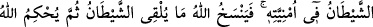
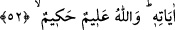

infaklarda bulundum ve onların sohbetine devam ettim.”
Bu hikâyede bazı işâretler vardır:
1- Evliyânın kerâmetleri haktır.
2- Onlarda görülen halleri akıl kabul etmiyor diye inkâr, hatâdır.
3- Peygamber (a.s.)’ın vârislerinin kapısına dönüp mürâcaat etmek, kulu kabul
halkasına dâhil eder.
Hâfız der ki:
Saadet hazinesi anahtarı, gönül ehline makbul olmaktır
Sakın ola ki bunda kimsenin şek ve şüphesi olmasın
Büyüklerden bir zat der ki: “Hak yolda yürüyenlerden istimdâdda bulunmak, murâda
erme konusunda büyük bir asıl/esastır. Ancak sebeplere sarılmakla birlikte olan güzel
îtikad da zor işleri kolaylaştırır ve Rablerin Rabbi’ne ulaştırır. Allah kapıları açan ve
doğru yola iletendir.”
Yine onlardan bir zât der ki: “Allah’ı bilen âlimleri (ulemâ-billâh) inkâr eden ancak
anlayışındaki eksiklik, ma‘rifetindeki azlıktan inkâr etmiştir. Çünkü onların ilimleri,
keşf ve muâyeneye (ıyân) dayanır. Başkalarının ilimleri ise fikrî havâtıra ve zihinlerden
kaynaklanır. Onların yollarının başı takvâ ve sâlih ameldir. Başkalarının yolu ise
maslahatlarına ermek için kitapları mütâlaa etmek ve mahlûkattan istimdâddır. Onların
ilimlerinin nihâyeti Hay ve Kayyum olan Hakk’ı müşâhededir. Başkalarının ilminin sonu
ise vazifeler, makamlar ve kalıcı olmayan dünya malı elde etmektir. Şu halde seyyid,
önder, yol gösterici ve liderler olan bu âlimlerin yolundan başka yol yoktur.
52. (Ey Muhammed!) Biz, senden önce hiçbir resûl ve nebî göndermedik ki, o,
okuduğu zaman şeytan onun okumasına ille de (küfür sözleri) katmaya
kalkışmasın. Ne var ki Allah, şeytanın katacağı şeyi iptal eder. Sonra Allah, kendi
âyetlerini (lafız ve mana bakımından) sağlam olarak yerleştirir. Allah, hakkıyla
bilendir, hüküm ve hikmet sahibidir.
“(Ey Muhammed!) Biz, senden önce hiçbir resûl ve nebî göndermedik ki…”
Bu ayet rasûl ile nebînin farklı olduğuna açık delildir. Rasûl, Allah’ın risâletini halka
tebliğ ve halkın iki dünya işlerinden akıllarının yetmediği hususları açıklaması için